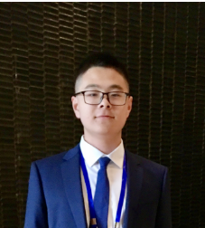

Yuchen Mu
Bachelor of Information Security |
 |
I'm a fourth-year undergraduate student at Nankai University, majoring in Information Security in the College of Cyber Science .
My research interests Operating System, machine learning, and data mining. In particular, I am interested in Secure System & TEEs.
I am looking for a Ph.D position for 2024 Fall!